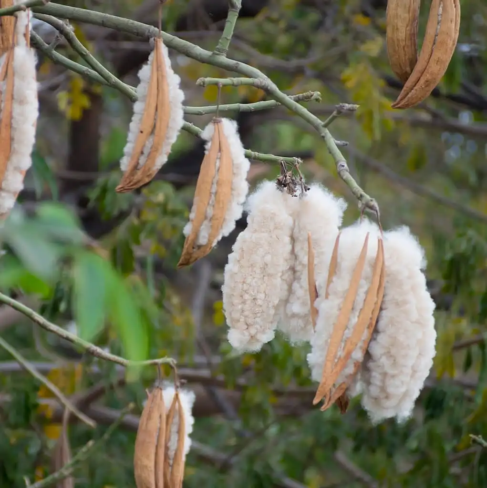
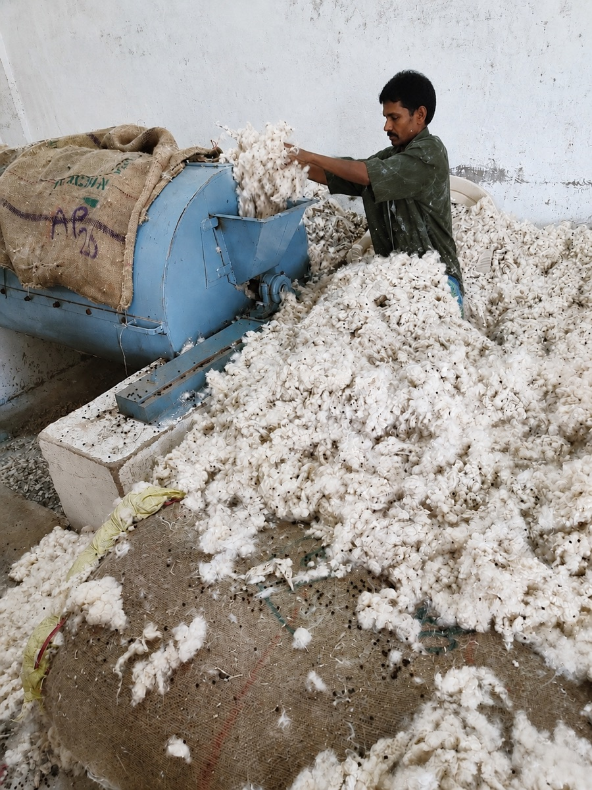
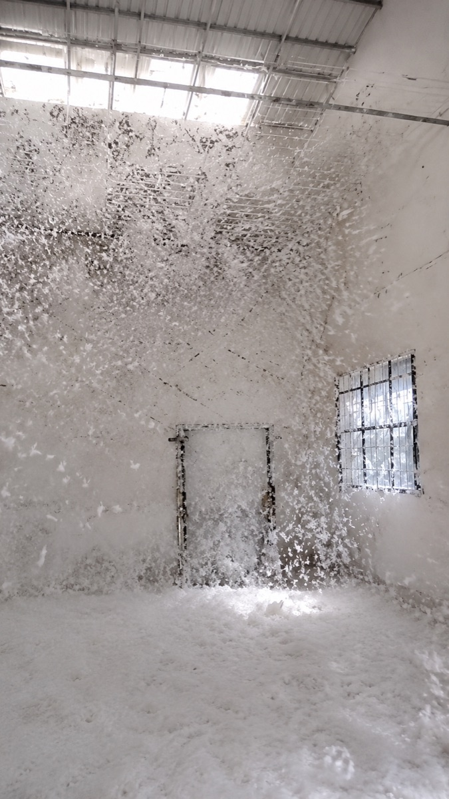
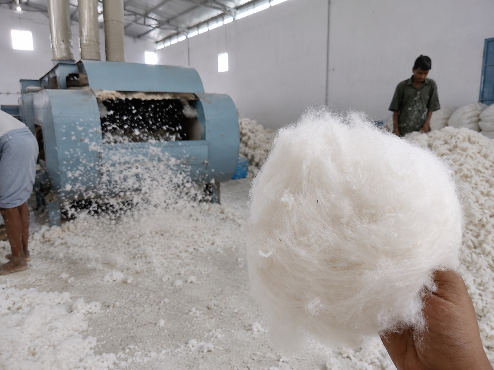
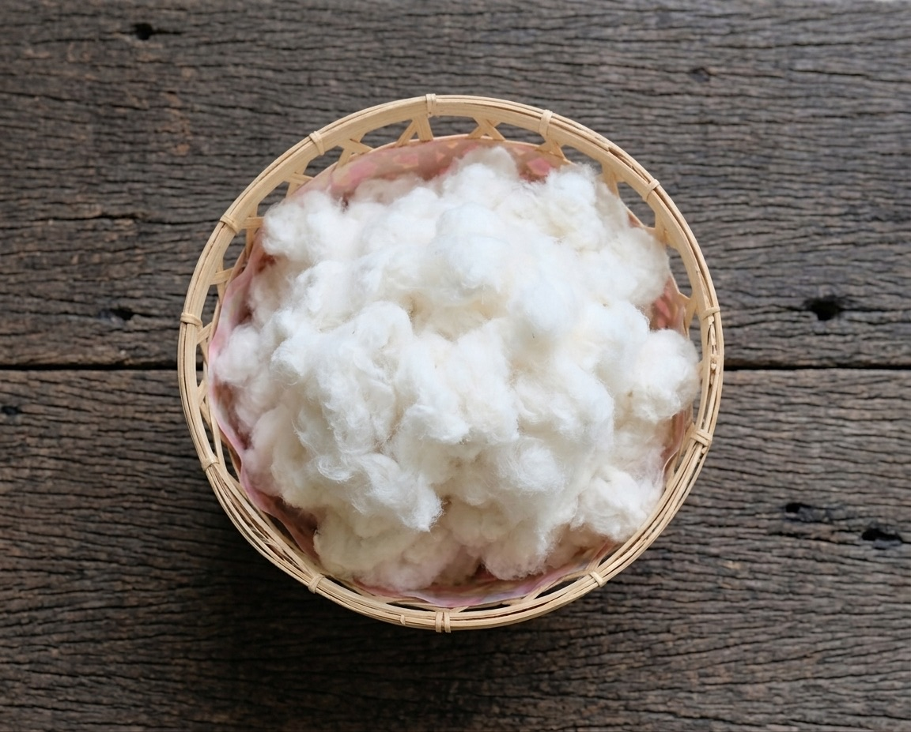
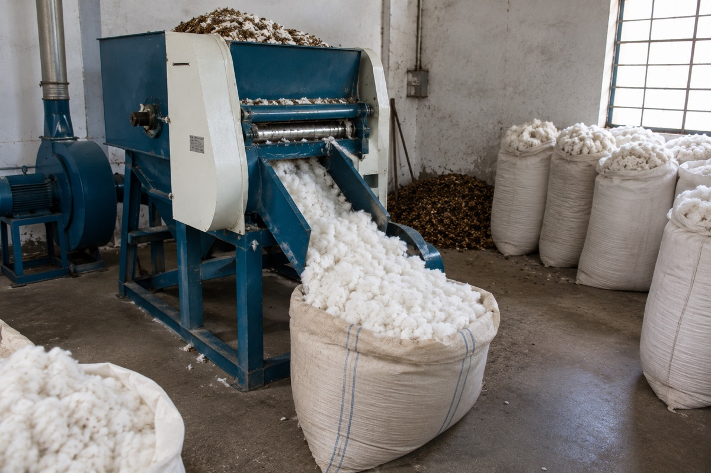

The fill
Hand-picked tree cotton, de-seeded, cleaned and opened. Undyed. Seed and shell under 1.5% by weight.
Hand-picked organic tree cotton, de-seeded and cleaned on our own line, sold direct as filling fibre for mattresses, pillows, cushions and soft toys. It cannot be spun into yarn, and we do not pretend otherwise.

One fibre, sold direct by the mill that cleaned it. The five things buyers ask first.
Hand-picked tree cotton, de-seeded, cleaned and opened. Undyed. Seed and shell under 1.5% by weight.
Pressed 80 kg bales, roughly 1.1 m³ each, or 20 kg bags for a workshop filling by hand.
7–14 days in season, February to June. Around three weeks off-season, from warehouse stock.
About 6.5 MT in a 20 ft, 14 MT in a 40 ft high cube. Quote your freight by volume.
Per MT, firm for 30 days. Ex works, FOB or CIF. 30% advance, balance against documents.
Quotes are written, firm for 30 days, and come back within two working days.
One fibre, three trades. If you are making something on this list, the fill is a fit.
Cotton mattresses, futons, floor cushions, bolsters. Loft that holds under weight, and re-cardable rather than landfill.
Pillows, meditation cushions, upholstery padding, seat squabs. Light, breathable, springy - none of the heat of foam.
Stuffing for toys and dolls, batting for quilts. Cleaned and opened, in bag sizes a workshop can handle.
Photographed on our own floor, in the order it happens. No stage is subcontracted and nothing is bought in between one picture and the next.






Outturn is about 25% by weight - the rest is seed and husk. That is the arithmetic behind the price, and it is why we sell cleaned fill rather than raw bolls.
Tree cotton is not a cheap substitute for spinning cotton. It fills a volume rather than making a thread, and that is the job it is good at.
| Property | Our tree cotton fill | Polyester fibrefill | Foam |
|---|---|---|---|
| Origin | Natural, perennial crop | Petrochemical | Petrochemical |
| Form supplied | Loose cleaned fibre | Loose or batted | Sheet or crumb |
| Can be spun | No | Yes | No |
| Breathability | High | Moderate | Low |
| Refill and repair | Re-card and top up | Replace | Replace |
| End of life | Composts | Does not | Does not |
Indicative values for the three fibres most often considered for the same job.
We would rather lose the enquiry than have a lorry come back. If you need any of these, this is the wrong material and we will say so.
Short, smooth and brittle, with no crimp to grip its neighbours. No yarn on any system, hand or machine.
We sell it undyed, to go inside a cover. If you need a coloured fill, this is not it.
Dusty to handle, flammable untreated. Filling stations need extraction; your finished goods carry their own flammability tests.
Most tree cotton reaches a filling floor through two or three intermediaries, as a sack with no history. We contracted the crop and cleaned it ourselves.
One counterparty, one invoice, one place to call when something is wrong.
Our lines run gently and de-dust the fibre, so it arrives lofted rather than matted and broken.
No broker layer. Your cost is the crop, the cleaning and our margin - nothing else.
Seed and shell is the commonest complaint in this trade. Ours runs under 1.5% by weight.
We clean only what our own contracted groves deliver. Nothing is bought in and blended with it.
Contracts against the coming crop open in July. That is how repeat buyers secure tonnage early.
Say what you are making and how much you need. You get a written price, a lead time and Incoterms within two working days.